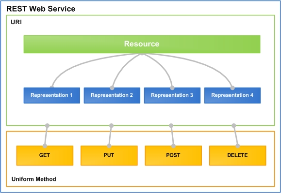

Introduction to Apache Wink
Apache Wink 1.0 is a complete Java based solution for implementing and consuming REST based Web Services. The goal of the Wink framework is to provide a reusable and extendable set of classes and interfaces that will serve as a foundation on which a developer can efficiently construct applications.
Wink consists of a Server module for developing REST services, and of a Client module for consuming REST services. It cleanly separates the low-level protocol aspects from the application aspects. Therefore, in order to implement and consume REST Web Services the developer only needs to focus on the application business logic and not on the low-level technical details.
The Wink Developer Guide provides the developer with a rudimentary understanding of the Wink framework and the building blocks that comprise it.
Welcome to Apache Wink
Wink is a framework for the simple implementation and consumption of REST web services. REST is an acronym that stands for REpresentational State Transfer. REST web services are "Resources" that are identified by unique URIs. These resources are accessed and manipulated using a set of "Uniform methods". Each resource has one or more "Representations" that are transferred between the client and the service during a web service invocation.
The central features that distinguish the REST architectural style from other network-based styles is its emphasis on a uniform interface, multi representations and services introspection.
Wink facilitates the development and consumption of REST web services by providing the means for modeling the service according to the REST architectural style. Wink provides the necessary infrastructure for defining and implementing the resources, representations and uniform methods that comprise a service.
REST Architecture
For a detailed understanding of the REST architecture refer to the description by Roy Fielding in his dissertation, The Design of Network-based Software Architectures. In particular, Chapter 5 Representational State Transfer (REST) describes the principles of the architecture.
REST Web Service
Figure 1: REST Web service design structure

Figure 1 demonstrates the design principles and components that comprise a REST web service. Wink reflects these design principles in the implementation of web services.
Apache Wink Open Development
The purpose of this document is to provide detailed information about Wink 1.0 and describe the additional features that the Apache Wink 1.0 runtime provides in addition to the JAX-RS Java API for REST Web Service specification.
In addition to the features description, this document also provides information regarding implementation specific issues.
This document provides the developer with a rudimentary understanding of the Wink 1.0 framework in order to highlight the underlying concepts and precepts that make up the framework in order to create a basis for understanding, cooperation and open development of Wink.
| JAX-RS Specification Document For more information on the JAX-RS functionality, refer to the JAX-RS specification document, available at the following location: http://jcp.org/aboutJava/communityprocess/final/jsr311/index.html |
JAX-RS Compliancy
Apache Wink 1.0 is a complete implementation of the JAX-RS v1.0 specification.
JAX-RS is a Java based API for RESTful Web Services is a Java programming language API that provides support in creating web services according to the Representational State Transfer (REST) architectural style. JAX-RS uses annotations, introduced in Java SE 5, to simplify the development and deployment of web service clients and endpoints.
{kind=link}
{kind=link}